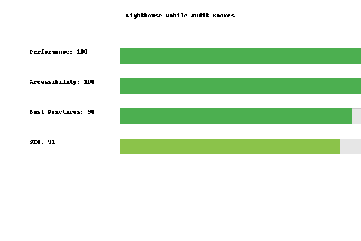

Overview
This assignment required creating a mobile-friendly version of the main portfolio home page. The goal was to ensure the same content and menu options are available on a small screen while maintaining good accessibility and usability. I chose to create a separate mobile page (index_mobile.html) that uses a custom stylesheet (mobile.css). The navigation collapses into a hamburger button on narrow devices and expands into a vertical list when tapped.
Lighthouse Mobile Audit
After implementing the mobile version, I ran a Lighthouse audit using Chrome DevTools in Mobile/Navigation mode. The report evaluates performance, accessibility, best practices and SEO for the mobile page. The categories are scored from 0–100 (higher is better).
| Category | Score (0–100) |
|---|---|
| Performance | 100 |
| Accessibility | 100 |
| Best practices | 96 |
| SEO | 91 |
The full Lighthouse report screenshot is provided below for reference.
